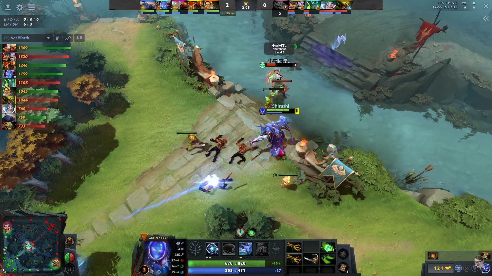
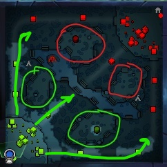

Стояние на миде - это очень комплексная вещь. Но если вкратце, вам нужно добивать и денаить крипов, а в перерывах между добиваниями пытаться харасить и зонить искрами оппонента. Пытайтесь держать крипов около своего хайгрануда и не пушить лишний раз мид. Пуша мид вы открываетесь для ганга, даёте врагу лёгкий фарм и руините фарм себе.
Вард нужно ставить так, чтобы видеть врага на его хайграунде. Постарайтесь поставить вард так, чтобы враг не смог заметить этого. Очень хороший вариант - поставить вард через смоук до выхода крипов. Желательно ставить вард чуть дальше от самой линии, чтобы враг не раздевардил его очевидным сентри в центре мида.
Если же саппорт расщедрился и на сентри sentry_ward.jpg , то обязательно поставьте его и разбейте вард противника. Рабитый вард не только даст голду и опыт, но и лишит противника вижена, что позволит легче харасить его и не быть захарашенным самостоятельно.
Внимательно следите за информацией, которую дают вам союзнике, и сами посматривайте за картой. В случае, если не видно какого-то героя, который может вас загангать - обязательно просветите подходы к линии искрами. Если у вражеских гангеров есть инвиз, то обязательно попросите саппорта купить вам сентри, и, если он отказался тратить на вас деньги, купите сентри сами.
На 6 уровне, Арк убивает большинство мидеров, поэтому не стесняйтесь делать фраги.
Если вас обогнали по уровню и не дают ни одного крипа, то вам стоит попросить вашего саппорта о ганге, либо же просто пойти фармить лес. Уйти в лес это неплохая затея, при проигранном миде, ведь оставаясь на линии, вы, кроме того что ничего не получаете и попусту тратите время, рискуете быть убитым превосходящим вас по силе соперником.
Если вы уже апнули 6 уровень, хорошей идеей также может быть пойти на ганг. Сделав пару фрагов на другой линии, вы можете частично окупить проигранный мид. А если добёте вышку, то вообще класс. В любом случае, это лучше чем ничего.

Фарм
После лайнинга вы идете фармить большой лес, тройку(Древних крипов) и при помощи ульты вы фармите крипов с линии.
Фармя свои слоты вы можете помогать своей команде в тимфайте, но перед тем как начинать файт вы должны понимать 2 вещи: 1.Вы точно выйграйте этот файт.
2. Этот файт принесет даст вашей команде преимущество на карте(Уничтожение т1 или т2, захват вражеской терретории, убийство рошана).
После покупки Silver Edge вы можете в соло убивать одиноких сапортов.

Фишки?
Большее об этом герое вы можете узнать от топ снг Арка Jess